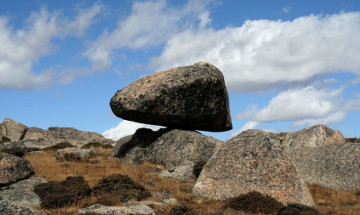
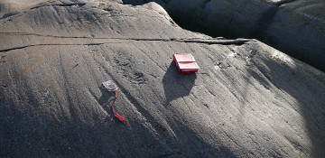
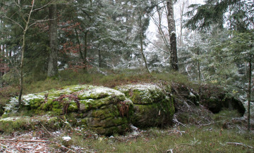
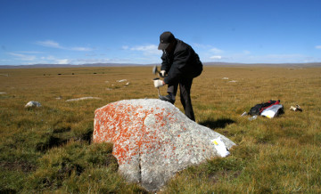
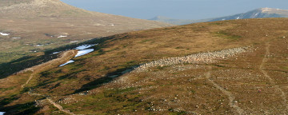

Research
My research focuses on Earth surface processes and in particular glacial geomorphology and paleoglaciology. The methods I use include remote sensing (landform mapping), field investigations, cosmogenic dating, and numerical modeling. Below I list some past and ongoing research projects.
A global compilation of glacial 10Be and 26Al
Cosmogenic dating has become a key tool for paleoglaciology and there is a large (and growing) number of published cosmogenic ages from glacial landscapes. To enable reuse of these glacial samples, including recalculation with updated calculators and production rates, I have compiled a global dataset of 10Be and 26Al data from glacial samples. The compilation can be found here: expage.github.io.
Cosmogenic dating has become a key tool for paleoglaciology and there is a large (and growing) number of published cosmogenic ages from glacial landscapes. To enable reuse of these glacial samples, including recalculation with updated calculators and production rates, I have compiled a global dataset of 10Be and 26Al data from glacial samples. The compilation can be found here: expage.github.io.

Past (and future) glacial erosion at Formark
Forsmark, at the Swedish east coast north of Stockholm, is planned to be the location for the Swedish nuclear waste repositary. In this project we use cosmogenic nuclide (10Be, 26Al, and 21Ne) analysis of bedrock samples to investigate and quantify the amount of past glacial erosion in the Forsmark region.
Forsmark, at the Swedish east coast north of Stockholm, is planned to be the location for the Swedish nuclear waste repositary. In this project we use cosmogenic nuclide (10Be, 26Al, and 21Ne) analysis of bedrock samples to investigate and quantify the amount of past glacial erosion in the Forsmark region.

Deglaciation of the Fennoscandian ice sheet
The general pattern and timing of the Fennoscandian ice sheet deglaciation have been resonably well understood for decades, but there are still large uncertainties based on a patchy landform record and chronological uncertainties. In this project we reconstructed the last deglaciation based on the landform record and published 14C, OSL, and cosmogenic (10Be and 26Al) data.
Fennoscandian deglaciation animation
The general pattern and timing of the Fennoscandian ice sheet deglaciation have been resonably well understood for decades, but there are still large uncertainties based on a patchy landform record and chronological uncertainties. In this project we reconstructed the last deglaciation based on the landform record and published 14C, OSL, and cosmogenic (10Be and 26Al) data.
Fennoscandian deglaciation animation
{kind=link}

Glacier modeling of Tibetan Plateau glaciers
Using a high resolution glacier mass balance and ice flow model we investigate the effect of climate change on Tibetan Plateau glaciers.
120 ka animation with climate forcing
Using a high resolution glacier mass balance and ice flow model we investigate the effect of climate change on Tibetan Plateau glaciers.
120 ka animation with climate forcing
{kind=link}

Erosion of the Tibetan Plateau
Using cosmogenic nuclide analysis of river sediments from the northeastern Tibetan Plateau we have been able to estimate the average erosion rate for river basins on the low-relief plateau surface, along the steep plateau margin, and in the glacially carved mountain valleys. The data will be used for evaluating the long-term landscape evolusion.
Using cosmogenic nuclide analysis of river sediments from the northeastern Tibetan Plateau we have been able to estimate the average erosion rate for river basins on the low-relief plateau surface, along the steep plateau margin, and in the glacially carved mountain valleys. The data will be used for evaluating the long-term landscape evolusion.

Cosmogenic dating of Bavarian Forest tors
Many tors that were covered by the European and North American ice sheets have been dated with cosmogenic nuclide analysis to show the preservation potential under non-erosive ice. However, there are few tors (and tor-like surfaces) from areas never covered by ice that have been dated by cosmogenic nuclide analysis. This project adds some cosmogenic data for tors in the Bavarian Forest that have avoided ice coverage.
Many tors that were covered by the European and North American ice sheets have been dated with cosmogenic nuclide analysis to show the preservation potential under non-erosive ice. However, there are few tors (and tor-like surfaces) from areas never covered by ice that have been dated by cosmogenic nuclide analysis. This project adds some cosmogenic data for tors in the Bavarian Forest that have avoided ice coverage.

Paleoglaciology of the NE Tibetan Plateau
My PhD thesis (2005-2010) focussed on the glacial history of the presently ice-free Bayan Har mountains on the northeastern Tibetan Plateau. Based on the pattern of glacial landform (remote sensing) and glacial deposits (field investigations) we concluded that the mountains have been covered by extensive ice-fields at some point in the past, but extensive low-lying plateau regions also lack any evidence for past glaciation. With cosmogenic (10Be) dating of glacial boulders, surface pebbles, and a few depth profiles we obtained a wide range of exposure ages ranging up to well above 100 ka. With scattered exposure ages we did not succeed in defining a precise glacial chronology, but the generally old exposure ages, including three old boulders on a moraine formed by a relatively small valley glacier, showed that the Bayan Har glaciers during the global last glacial maximum were not much larger than today.
My PhD thesis (2005-2010) focussed on the glacial history of the presently ice-free Bayan Har mountains on the northeastern Tibetan Plateau. Based on the pattern of glacial landform (remote sensing) and glacial deposits (field investigations) we concluded that the mountains have been covered by extensive ice-fields at some point in the past, but extensive low-lying plateau regions also lack any evidence for past glaciation. With cosmogenic (10Be) dating of glacial boulders, surface pebbles, and a few depth profiles we obtained a wide range of exposure ages ranging up to well above 100 ka. With scattered exposure ages we did not succeed in defining a precise glacial chronology, but the generally old exposure ages, including three old boulders on a moraine formed by a relatively small valley glacier, showed that the Bayan Har glaciers during the global last glacial maximum were not much larger than today.

Marginal moraines in the Swedish mountains
For my undergraduate thesis (2004-2005) I mapped marginal moraines in the Swedish mountains based on aerial photography interpretation.
For my undergraduate thesis (2004-2005) I mapped marginal moraines in the Swedish mountains based on aerial photography interpretation.
